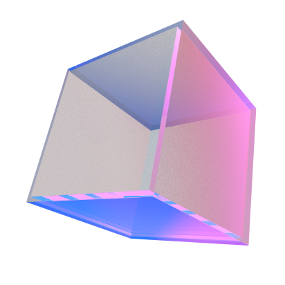
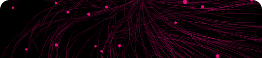
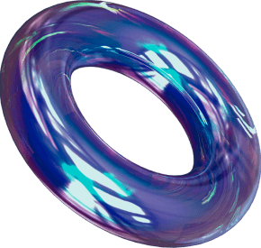
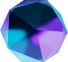
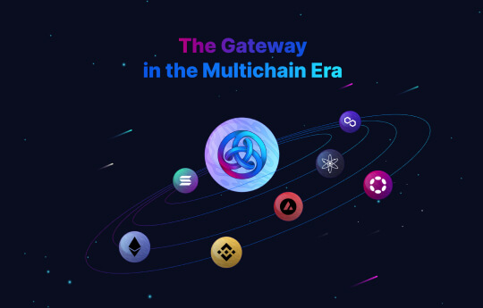

A Look Back At Polkadot 2022
2022 was an unfortunately eventful year for the Web3 space, but positive changes happened all around the Polkadot and Kusama ecosystem. From technology rollouts such as XCM going live on Polkadot, OpenGov enacted on Kusama and Nomination Pools available on the Staking Dashboard to notable updates including USDT’s launch on Polkadot and DOT’s morphing into software to world-wide events like Polkadot Decoded, Polkadot Blockchain Academy and Sub0, Polkadot and Kusama’s 500+ projects were building with resilience amidst the gloomy market.
As the final quarter of 2022 has come to an end, let us look back at the year-long progress of the whole ecosystem. If you want a comprehensive listing of all ecosystem projects, check out Dotinsights’ Polkadot and Kusama Ecosystem Map available in two views, Projects By Category and Most Loved Projects. As always, we welcome community contributions; you can either Submit Your Project or create an issue/PR on our public Github repo.




Ecosystem Overview
Financial Status & Development Activity
Similar to the previous quarter, DOT opened Q4 with a strong start. After hovering around $6.00 in October, the token’s price experienced an upsurge and peaked at $7.40 on November 07 with a $8.07B market cap. This upward trend roughly collided with a ten-fold increase in new accounts on Polkadot following the collapse of centralized exchange FTX. The second half of Q4, however, appeared much more bleak. At the dip of $4.38 on December 22, DOT had lost 85.79% in its value compared to the year’s peak price of $30.83 on January 03 and 92.04% compared to the all-time high price of $55.00.
Token Price vs. Development Activity
KSM’s financial performance was a complete opposite. The token's price slid from $44.38 on October 04 at $372.01M market cap to as low as $21.89 on November 14 at $205.41M market cap, but bounced back steadily in the second half of Q4, reaching as high as $31.78 on December 06. Nonetheless, one can expect that the continued downcycle coupled with macroeconomic recovery slowness in 2023 will likely bring token prices much lower.
If one were to compare token price with development activities, one would see that the same inversely proportional relationship observed in H1 and Q3 of 2022 was even more pronounced in Q4 as token price plunged and development activities shot up. Compared to the first half of 2022, the average daily development activities on Polkadot in the second half were 1.23 times higher. Throughout the year, September, October and November marked the busiest months for Polkadot builders.
Polkadot Core Active Developers & Code Commits 2022
At the core protocol level, developers contributing to Parity Technologies’ Github were consistently delivering throughout the year. The number of active developers, defined as unique Github users who made 1+ commits to the project’s public repositories in the past 30 days, steadily increased from Q1 to Q4 and averaged 128 active builders a day. Zooming out to the whole Web3 space revealed that Polkadot was persistently a runner-up in the development activity race, coming second to and even at times surpassing Cardano and Cosmos.
Development Activity Comparison

Decentralization & Staking
In Q4 2022, the crypto community was shaken by ConsenSys’s updated
privacy policy, which stated that MetaMask would collect user IP addresses via Infura. Although the company immediately
assured their users that their data would neither be exploited nor monetized, the community still expressed deep concerns and skepticism over data centralization. Substrate
light clients, on the contrary, guaranteed decentralization and security for blockchain users.
By actively downloading block headers and verifying whether a full node’s response matches the headers, light clients consume much less storage space and take away the need to trust a third-party-owned node for convenient interaction with the blockchain. At the time of writing, top wallets in the Polkadot and Kusama ecosystem such as SubWallet, Nova Wallet and Talisman had integrated light clients. On December 05, Astar Network became
the first parachain to support this technology.
Nomination Pools Staking on Polkadot 2022
And to further advance decentralization, Polkadot introduced Nomination Pools staking on November 01, allowing users to stake as low as 1 DOT. It took only 4 days for 64/64 pools to be opened and by the end of December, 800,000+ DOT had been staked in pools by 3,500+ pool members. The overall staking ratio remained fairly stable throughout the year and oscillated around 50%.
DOT Staking Ratio 2022
Token Holder
| Quarter | Q4 2021 | Q1 2022 | Q2 2022 | Q3 2022 | Q4 2022 |
|---|---|---|---|---|---|
| DOT cumulative holders | 376,386 | 648,517
+72.30%
|
837,967
+29.21%
|
983,316
+17.35%
|
1,210,317
+23.44%
|
| KSM cumulative holders | 642 | 18,947
+2851.25%
|
33,517
+76.90%
|
49,263
+46.98%
|
66,659
+35.31%
|
Similar to the previous quarters, the total number of DOT and KSM holders continued the upward trend. By the end of Q4 2022, DOT holders had grown tremendously, more than 3 times compared to Q4 2021 and almost 2 times compared to Q1 2022. November 13 witnessed the highest increase of 10,403 new accounts on Polkadot in 2022 while the record-breaking surge of 167,291 active accounts was logged on December 16.
On Kusama, the 4 peaks of active accounts throughout the year collided with the big KSM unlocks following the expiration of the first 20 parachain slots. In terms of new KSM accounts, 2022 witnessed a exceptional boost of 28.5 times in Q1 and more than 100 times in Q4 compared to Q4 2021. The quarterly incremental rate, however, decreased from 76.90% in Q2 to 35.31% in Q4.
Active Accounts and New Accounts on Polkadot 2022
Active Accounts and New Accounts on Kusama 2022


Parachain
As of December 31, 33 parachains were running on Polkadot and 41 on Kusama, locking 132M+ DOT and 284K+ KSM respectively. The chart below shows the amount of DOT raised for all auctions to date, which had lowered significantly over time. From the highest bid of 35.76M DOT (approximately $162M at the time) in Moonbeam’s auction, the funds raised went as low as 9.9K DOT (close to $45K) for the 21st auction winner Darwinia. That being said, running a parachain on Polkadot is now more affordable than ever, costing only a few hundred thousand dollars on average.
Total DOT Raised per Parachain Auction
Bidding for a parachain slot on Kusama is even easier. In November, Darwinia’s canary network Crab Network made history by winning with the lowest bid of 11 KSM (about $250), down 99.998% from Karura’s first and highest winning bid of 501,138 KSM (about $11.42M). In fact, the cost had gone down so substantially that 13 out of the latest 20 auctions were self-funded.
Total KSM Raised per Parachain Auction
This year, blockchain interoperability was taken to the next level with the implementation of the cross-consensus messaging format XCM on both Kusama and Polkadot. Over 100 channels had been opened by year-end, delivering over 160K transfers on Polkadot and almost 200K on Kusama in total. On average, Polkadot parachains sent roughly 20K transfers a month, while those on Kusama exchanged a more modest 14.1K even though XCM went live on Polkadot much later.
In terms of value transferred, Polkadot parachains also outweighed their canary networks by 1.7 times. By the end of December, total amount received via XCM on Polkadot surpassed $605M while that on Kusama was slightly over $354M. As more focus is being placed on Polkadot branding, it is highly likely that the gap will continue to widen in 2023.
XCM Transfers on Polkadot & Kusama 2022
Total Amount Received via XCM on Polkadot & Kusama 2022



Governance & Grant
By the end of 2022, DOT treasury sat at ~42M DOT and KSM treasury at 467K+ KSM. 4M+ DOT and 380K+ KSM had been paid out via proposals, tips and bounties to teams and individuals who contributed to the development of Polkadot and Kusama ecosystem respectively. Bifrost Foundation was awarded the highest amount of funds valuing $2.63M, whereas PolkaWorld had the most proposals approved in the top 10.

KSM
| Beneficiary/Proposer | Total value |
|---|---|
|
Bifrost Foundation
|
50,000 KSM
≈ $2,630,000.00
|
|
Acala Foundation
|
22,000 KSM
≈ $2,371,565.801
|
|
Encointer
|
36,534.084 KSM
≈ $1,152,559.485
|
|
Soramitsu
|
29,901.575 KSM
≈ $1,092,632.836
|
|
Snowbridge
|
25,132.66 KSM
≈ $644,241.93
|
|
Odyssey Multi-sig
|
9,065.41 KSM
≈ $543,436.684
|
|
Nova Foundation
|
5,234.71 KSM
≈ $537,066.18
|
|
The Kusamarian
|
8,002.8 KSM
≈ $497,823.304
|
|
Patract
|
3,259 KSM
≈ $426,319.799
|
|
Infrastructure Maintenance Bounty
|
11,000 KSM
≈ $409,318.759
|
DOT
| Beneficiary/Proposer | Total value |
|---|---|
|
ChainSafe
|
293,194.072 DOT
≈ $1,847,122.653
|
|
W3F
|
120,879 DOT
≈ $1,231,315.925
|
|
Nova Foundation
|
114,431.29 DOT
≈ $719,807.682
|
|
PureStake
|
76,115.42 DOT
≈ $663,768.759
|
|
Alzymologist
|
103,209.31 DOT
≈ $639,438.908
|
|
OneBlock
|
76,859.82 DOT
≈ $551,275.248
|
|
PolkaWorld
|
40,699.05 DOT
≈ $519,758.718
|
|
SubWallet
|
73,747 DOT
≈ $503,962.729
|
|
OnFinality
|
42,084.928 DOT
≈ $463,647.902
|
|
GalaticCouncil/
AmsterDOT |
55,490 DOT
≈ $439,461.715
|
Source: doTreasury
Note: Data as of 31 Dec 2022.
Besides the DOT and KSM treasuries, projects looking to build in the Substrate ecosystem can also apply for Web3 Foundation Grants and Substrate Builders Program. Over four years since the Grant Program started, Web3 Foundation had awarded funding for a total of 476 applications in
16 waves. Among top projects, Stake Technologies (Astar Network), Zondax and 727.ventures all received 7 grants, followed by LimeChain with 6 grants and Usetech with 5. The Substrate Builders Program admitted
32 new teams from a pool of 127 applications this year, adding up to an overall of 75+ among whom 60% were parachain teams.
Web3 Foundation Grants Signed 2019-2022


Community Development
Despite the aggravated market conditions, community expansion remained steady in the Polkadot and Kusama ecosystem.
700+ community events were held around the globe, and that excluded major ecosystem-wide and builder-focused events such as
Sub0,
Polkadot Decoded,
Polkadot Hackathon and
Polkadot Devcamp. Coming back for the first time in person since 2019, Sub0 welcomed 550+ Substrate engineers to Lisbon, Portugal for a back-to-back two-day conference.
Meanwhile, Polkadot Decoded 2022 edition made history by surpassing the 2021 Parachain Launch Party to become the Biggest Polkadot Event of All Time. A record 302,000+ people tuned in to the live-streamed event together with 3,248 in-person attendees in 4 locations including New York, Buenos Aires, Berlin and Hangzhou. Education initiatives such as
Polkadot Blockchain Academy and
edX online courses also served to speed up Web3 adoption and attract builders to the ecosystem.
Polkadot Twitter Followers 2022
This past year, the Polkadot Ambassador program admitted 1,600+ additional candidates, raising the total number of members to 3,500+ among whom 31% were developers. In terms of social media growth, the number of Twitter followers on the Polkadot official account rose about 31.43% from 1.06M to 1.39M throughout the year with the sharper upward curve in H1. Polkadot’s Youtube channel concluded the year with 47.6K subscribers and Reddit community sat at 80.7K members. By 04 January 2023, the almost one-year-old
Substrate and Polkadot StackExchange had received 2,830 questions and 3,188 answers in total and recorded 2,661 users and 171 visitors per day.
Polkadot Forum Site Statistics
| Topics | Posts | Sign-Ups | Active Users | Likes | Chat Messages | |
|---|---|---|---|---|---|---|
| Last 24 hours | 1 | 30 | 2 | 97 | 16 | 0 |
| Last 7 days | 9 | 87 | 9 | 196 | 82 | 0 |
| Last 30 days | 53 | 617 | 81 | 448 | 694 | 4 |
| All Time | 325 | 3.7k | 776 | -- | 3.0k | 4 |
2022 also witnessed the birth of
Polkadot Forum, an open platform that allows teams and individuals to strike constructive and thoughtful discussions to benefit the ecosystem in the long run. By year-end, more than 700 users had contributed to 3.7K posts in over 300 topics. Two hottest topics with more than 4.0K views were Gavin Wood’s
call for Polkadot core developers and Joe Petrowski’s
Statemint updates that contained the controversial
DEX on Statemint debate.


The DeFi Economy
TVL Share by Top DeFi Parachains 2022
Polkadot and Kusama parachains focusing on DeFi all had a busy year full of activities. Top 6 parachains including Moonbeam, Moonriver, Acala, Karura, Astar and Parallel consistently dominated the DeFi scene. Moonriver, Astar and Moonbeam took turns to take the lead in TVL share in Q1, Q2 and Q4 respectively, while Q3 was quite equally divided among Moonbeam, Moonriver and Acala.
At the peak on April 19, all chains’ combined TVL amounted to over $860M. The crypto winter, however, sent a hard blow and inflicted a 69.00% loss compared to the peak by 2022 year-end. Let us take a look at how each product performed through the year.

DEX (AMM)
In the last report, we surveyed 13 decentralized exchanges (DEX) and divided them into one group with a higher average TVL and another with a lower average TVL. This time we are twitching things a bit by splitting the 16 DEXes into those that are deployed on Polkadot and those that run on Kusama.
TVL of Polkadot DEXes 2022
Overall, most DEXes on Polkadot started off the year on the right foot but had a rocky second half witnessing the plunge in their TVL. The number one DEX on Astar ArthSwap lost 92.73% from the all-time high TVL of $169.55M to $12.32M by year-end. Similarly, StellaSwap’s TVL was down 82.23% from the peak of $141.52M.
However, a zoomed-in look into the second half of 2022 revealed positive signs. After the unfortunate Nomad hack in August, StellaSwap bounced back strongly. Their TVL hit a peak at $27.99M on November 06 and continued to fluctuate around $24M in December, making StellaSwap the top 1 decentralized exchange on Moonbeam in particular and on Polkadot in general when the year came to an end. Curve on Moonbeam and ArthSwap came second and third respectively, both above the range of $10M in TVL.
TVL of Kusama DEXes 2022
The similar downward trend from H1 to H2 was also visible in Kusama DEXes’ TVL. Though experiencing a towering 88.21% and 79.33% loss respectively from the peak, both Solarbeam and Karura retained their top two positions throughout twelve months and wrapped up December above $15M in TVL. Solarbeam lost their half-year reign to Karura on July 14 by a meager $600K, yet managed to regain the throne exactly five months later just before the year ended. On the lower end, Zenlink on Moonriver whose TVL topped both Karura’s and Solarbeam’s when the year started could not withhold the crypto winter. By year-end, they had lost almost $70M in TVL and came under both Beefy on Moonriver ($2.99M) and Polkaswap ($3.53M).
Next year, with the launch of new DEXes such as Equilibrium, Polkadex, Mangata, HydraDX and the Statemint DEX (temporarily named StateSwap), the landscape will become fairly packed. Some DeFi projects have been veering their focus on other products like money market or liquid staking, but for those still determined to operate a decentralized exchange, regular product development and appropriate marketing strategies are crucial in the cut-throat competition, especially when the trust in CEX and CeFi is waning.
Lending & Borrowing (Money Market)
TVL of Polkadot Lending Protocols 2022
Contrary to the packed DEX segment, lending protocols on Polkadot and Kusama are few and far between. On Polkadot, the money market scenery in 2022 could be divided into three periods: the Starlay period from March 04 to June 22 with a whooping peak of $300M+ in TVL, the Moonwell Artemis period from June 23 to August 02 that ended abruptly due to the Nomad hack, and the Acala period for the rest of the year despite the aUSD exploit. By the end of Q4, Acala lending protocol sat at $41.55M, Moonwell Artemis at $12.56M, Starlay at $8.46M and Parallel and AstridDAO both slightly over $5M. If these trends continue well into 2023, it will be very difficult for teams to compete with Acala.
On Kusama, Karura’s aUSD TVL hovered around $12M with little fluctuation compared to the more chaotic Moonwell Apollo on Moonriver. At their height, Moonwell Apollo exceeded $163M in TVL, which was 17 times higher than their dip of $9.54M on December 29.
TVL of Kusama Lending Protocols 2022

Liquid Staking
Because of delayed unstaking of both DOT and KSM, liquid staking solutions became popular for DeFi projects. Bifrost was the earliest player on Polkadot but immediately receded to second place when Acala launched their LDOT liquid staking on June 22. Acala’s TVL quickly rose to over $70M in less than two months, but had since tapered off gradually to $16.06M on December 31. Still, Acala remained on top; their TVL was 1.47 times higher than the runner-up Lido on Moonbeam and 2.8 times higher than the second runner-up Parallel at the end of Q4.
TVL of Liquid Staking Protocols on Polkadot 2022
Both Karura and Bifrost on Kusama went through deep valleys swiftly after their all-time high TVL. From mid-July onwards, the two projects’ TVL had a correlation coefficient of 0.97, as evident in the highly similar chart patterns. Bifrost clearly shifted their focus from DEX to liquid staking this year, with the constant launch of new staking options such as vGLMR, vBNC and vMOVR with APY as high as 30%. If done effectively, this strategy can fully utilize Bifrost’s TVL advantage at the end of 2022 and become the game changer for the project in the next few years.
At the other end, Lido on Moonriver, Heiko and Taiga all concluded 2022 with a TVL lower than $2.50M. While the focus on DOT seemed to explain low TVL for the first two projects, Tapio & Taiga would need a better strategy to boost their liquidity and attract more users to their DApps. Either increase liquidity and make use of Acala and Karura’s end-user marketing to gain a competing chance, or set themselves apart by positioning Tapio & Taiga as Acala and Karura’s staking derivatives where users can double their yield by earning on LDOT and LKSM respectively.
TVL of Liquid Staking Protocols on Kusama 2022
Liquid Crowdloan
From Polkadot and Kusama’s unique crowdloan feature comes liquid crowdloan solutions, which allow users to earn extra rewards compared to contributing via the traditional Polkadot.{js}. Throughout the year, Parallel was the only DeFi project to repeatedly promote their liquid crowdloan product, so it came as no surprise that they led the race and that liquid crowdloan TVL contributed the most to their overall Super App TVL. As to Acala, since they are currently not providing this product, it is expected that their crowdloan TVL will drop dramatically when their parachain lease expires and contributors’ DOT is unlocked in October 2023.
TVL of Liquid Crowdloan Protocols on Polkadot & Kusama
Stablecoin
2022 brought both good news and bad news for the stablecoin segment. The bad news was the aUSD exploit that led to cessation of the token’s issuance on Acala. Regardless, the amount of aUSD circulated on Karura remained fairly stable with a small dip to $3.8M mid-November. AstridDAO’s BAI saw more dramatic fluctuations and ended the year at a 64.71% loss in total market cap.
But the good news was USDT’s native supply deposit on both Kusama and Polkadot. By year-end, USDT supply had increased to 8M on Polkadot and 6.9M on Kusama. 2023 will welcome the
arrival of USDC on Polkadot, which hopefully will improve liquidity for the whole DeFi landscape in the ecosystem.
Stablecoin Issuance on Polkadot & Kusama 2022
Bridge
Bridge was arguably one of the most discussed topics in the Web3 space in 2022, and the Polkadot & Kusama ecosystem was no exception. Development continued on secure bridge solutions such as Interlay and Kintsugi’s Bitcoin bridges, Darwinia’s first Ethereum 2.0 & Polkadot bridge called Helix, Snowfork’s treasury-backed Snowbridge between Ethereum & Polkadot, and the upcoming system parachain Bridge Hub.
Among those aforementioned, Interlay and their canary network Kintsugi began to accumulate TVL in the second half of 2022. Kintsugi’s bridge TVL varied in the narrow range of $1M-$2M, reaching peak at $2.52M and halving to $1.26M at the bottom. Likewise, the correlation between Interlay’s highest and lowest TVL were approximately two-fold. As the project repositioned to be the one-stop-shop for Bitcoin DeFi, their TVL is forecast to rise greatly in the next year.
Bridge TVL on Polkadot & Kusama 2022

Non-fungible token
NFT Marketplace
Similar to DeFi, the NFT sector had a year bustling with activities, as seen through the sales of NFTs on marketplaces. In 2022, the Polkadot and Kusama ecosystem achieved a total of $17.81M in NFT sales volume, in which 85.00% came from RMRK’s Singular marketplace. Highest volume $319.47K was recorded on January 04, but the reduction in KSM price led to a much less $41.34K yearly average. Top collections by volume included Kanaria Bird (60.06K KSM), Kanaria Background (5.01K KSM), Kusama Queen (4.56K KSM), RMRK banners (3.73K KSM) and Youdle Tickets (3.69K KSM).
Taking Singular out of the equation leaves EVM-based marketplaces on Moonbeam, Astar and their canary networks. Moonbeans on Moonriver dominated the first half of the year with $826.02K in sales volume, then tofuNFT and Raresama on Moonbeam took over for a good four months before yielding to tofuNFT on Astar. Raresama made history by reaching 2M GLMR in sales volume in less than one month of launching, whereas thanks to the newly launched
Candy Girl NFT collection whose trading volume had surpassed 3M ASTR (~$124K) by 11 January 2023, NFT sales volume of tofuNFT on Astar totalled $148.65K in November and December only, accounting for 40.00% of the network's total sales volume in 2022.
Polkadot & Kusama NFT Marketplace Daily Sales Volume 2022
GameFi
For GameFi projects, 2022 was just the beginning. Many projects were still in the development phase, but some had already started testing or even deploying mainnet. The Great Escape, the first Play-to-Earn game on Moonbeam and possibly the first in the whole Polkadot & Kusama ecosystem to launch on mainnet, recorded an average of 1,829 games played per week with the highest being 3,782 in the third week of December. Also within the month, 5,452 GLMR and 2,083 GLMB were distributed as rewards for the players.
The Great Escape Weekly Game Sessions Played 2022
Another rapidly growing GameFi project on Moonbeam was the Web3 & NFT lifestyle app MoonFit. As shown in the chart below, MoonFit’s testnet active users went up tremendously in July and August with a sharp peak of 1,132 users on August 13. Thanks to the launch of the incentivized testnet launch, MoonFit achieved another peak of 528 active users on December 09.
MoonFit Daily Active Users 2022
2023 will see more GameFi projects coming to operation in the Polkadot & Kusama ecosystem, such as Bit Hotel, Evrloot, The Damned Pirates Society and Moonsama. In the bear market and especially after the GameFi trend has passed, projects will need to tackle many difficulties to sustain users and attract revenue other than NFT sales.

Web3
2022 witnessed the rise of Web3 identity solutions, among which Litentry and KILT were two prominent representatives. On June 24, Litentry launched MyCryptoProfile 2.0 for PhalaWorld and had since attracted 12.2K unique users to create 4,957 profiles and over 7,000 ID graphs. Similarly, by year-end, KILT had recorded 7,000+ users on their wallet Sporran, as well as 12,000 decentralized identifiers (DIDs), 11,000 web3names and 5,500 SocialKYC credentials. But the most outstanding milestone for KILT in 2022 was their
successful migration from Kusama to Polkadot.
Manta Trusted Setup Contributions 2022
Another distinguishing achievement by a Web3 project was Manta Network’s Trusted Setup, which quickly became the largest trusted setup in the history of zero knowledge proofs. By the end of the 28-day campaign, 13,000+ registrations and 4,300+ contributions were recorded from 177 countries. Shortly after, on December 30, the project announced MantaPay Incentivized Testnet v3. Their six-month-old Testnet v2 welcomed 22,520 unique addresses which generated more than 180K private transactions.
Closing Thoughts
If one were to focus on a month, one might not see much progress, but zooming out for a panoramic view of the whole ecosystem throughout the year brings in a lot of insights. Polkadot and Kusama projects steadily hit milestones, delivered updates and made accomplishments in 2022. Under the surface of the crypto winter, teams were building with resilience to create a solid foundation for the next bull run.
And if one zooms out further into the first five years of Polkadot from 2018 to 2022, the development is even more remarkable. Along with technical advancements, community expansion was the main focus of Polkadot. Total community events increased from 15 in 2019 to more than 700 in 2022, while annual events such as Sub0, Polkadot Decoded and Web3 Summit scaled up in size every year. So for the next few years of Web3 and Polkadot, the future is bright.
Get Started With Polkadot

SubWallet
is a user-friendly Web3 Multiverse Gateway for the Polkadot and Kusama ecosystem. Available both as a mobile app and a browser extension, SubWallet allows you to easily send & receive assets, manage your portfolio, handle NFT assets, track crowdloan activities and manage staking rewards. Using SubWallet means that you have the simplest and most secure way to connect to a wide range of blockchain-based applications in the Polkadot and Kusama ecosystem, be it Substrate or EVM-compatible DApps. You can use SubWallet with cold wallets and QR-signers and keep your assets safe.

Astar Network
– the Innovation Hub on Polkadot. Astar Network supports the building of dApps with EVM and WASM smart contracts and offers developers true interoperability, with cross-consensus messaging. We are made by developers and for developers: Astar’s unique Build2Earn model empowers software engineers to get paid through a dApp staking mechanism for the code they write. Astar’s vibrant ecosystem has become Polkadot’s leading Parachain globally, supported by all major exchanges and tier 1 VCs. Astar offers the flexibility of all Ethereum and WASM toolings for developers to start building their dApps. And to accelerate growth on Polkadot and Kusama Networks, Astar Space Labs offers an Incubation Hub for top TVL dApps.

RMRK
is a set of NFT standards which compose several "NFT 2.0 lego" primitives. Putting these legos together allows a user to create NFT systems of arbitrary complexity. Broadly, the RMRK standard exists in three formats: Kusama implementation, EVM implementation & FRAME Pallet implementation. Kanaria/Skybreach is one of RMRK’s projects that demonstrates & fully utilizes the 5 elementary RMRK NFT 2.0 legos to create a truly decentralized and permissionless metaverse. Singular is the official RMRK marketplace for the first Kusama-native NFTs.
About
Dotinsights is a research-focused initiative by SubWallet, the leading non-custodial Polkadot and Kusama wallet. By providing the most comprehensive and up-to-date Polkadot & Kusama Ecosystem Map along with data-driven Polkadot Deep Dive reports on a quarterly basis, our vision at Dotinsights is to become the official and trusted research hub and data platform of Polkadot.

Contributors

DJ Hà Trang
Lead Researcher

Alex Vu
Data Engineer

Darrell Ha
Data Engineer

Le Bui
Web Designer

Dung Nguyen
Frontend Developer

Hieu Dao
Co-founder &
Head of Product
Head of Product

Frankie Kao
Co-founder &
Creative Director
Creative Director

Thony
Co-founder &
Head of Strategy
Head of Strategy

Peter Mai
Head of Engineering

Ryan Dinh
Business
Development Manager
Development Manager

Kate Ha
Growth Lead

Emily Nguyen
Growth Executive

Mabel Nguyen
BD Executive